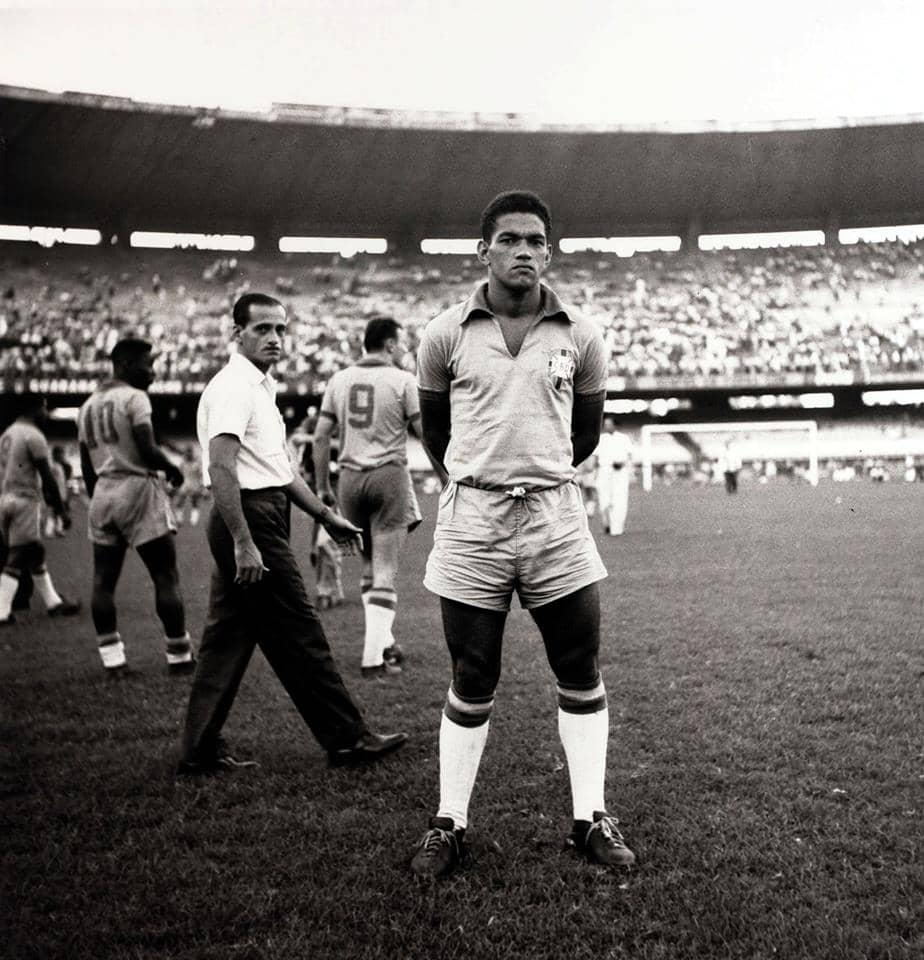
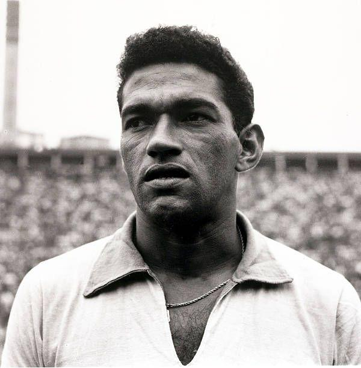
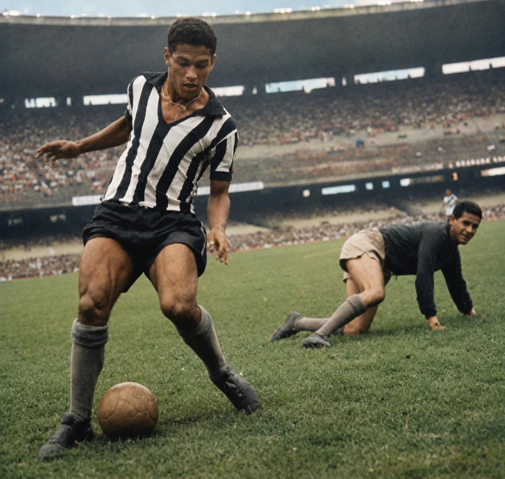

A ALEGRIA DO POVO
GARRINCHA
O Anjo das Pernas Tortas

Com dribles imprevisíveis, velocidade e criatividade, Garrincha encantou o mundo e entrou para a história como um dos maiores jogadores do futebol brasileiro.

De Pau Grande para o Mundo
Manuel Francisco dos Santos, conhecido como Garrincha, nasceu em 28 de outubro de 1933, em Pau Grande, no município de Magé, no Rio de Janeiro.
Desde jovem, chamou atenção por sua habilidade com a bola. Apesar das dificuldades físicas, transformou suas características em uma maneira única de jogar futebol.
Seus dribles desconcertantes fizeram dele um dos atletas mais admirados pelos torcedores.
Uma Carreira Inesquecível
1953
Estreia no Botafogo
Garrincha inicia sua trajetória profissional no Botafogo e começa a conquistar os torcedores.
1958
Primeira Copa do Mundo
Participa da campanha que levou o Brasil ao seu primeiro título mundial.
1962
O Mundo aos Seus Pés
Brilha na Copa do Mundo do Chile e tem papel fundamental na conquista brasileira.
1964
Conquistas pelo Botafogo
Continua marcando época com a camisa alvinegra e encantando os apaixonados pelo futebol.
1966
Última Copa
Disputa sua terceira Copa do Mundo, realizada na Inglaterra.
1973
Despedida da Seleção
Encerra sua trajetória com a Seleção Brasileira em uma partida de homenagem.
O Herói de 1962
Na Copa do Mundo de 1962, disputada no Chile, Garrincha assumiu protagonismo após a lesão de Pelé durante o torneio.
Com grandes atuações, marcou gols importantes e ajudou o Brasil a conquistar seu segundo título mundial.
Seu desempenho foi tão marcante que ficou conhecido como um dos grandes protagonistas daquela edição.

Números e Conquistas
2
Copas do Mundo
1958 e 1962
3
Copas disputadas
1958, 1962 e 1966
12
Anos no Botafogo
De 1953 a 1965
O Drible Nunca Será Esquecido
Garrincha não foi apenas um jogador de futebol. Foi símbolo de alegria, criatividade e paixão pelo esporte. Seu talento continua vivo na memória dos torcedores e na história do futebol mundial.